※成分に対して
※ヘアカラーロング剤の分類名であり、染色効果は2ヵ月程度。新たに生えてくる白髪には染色効果はありません。
※ヘアカラーロング剤の分類名であり、染色効果は2ヵ月程度。新たに生えてくる白髪には染色効果はありません。
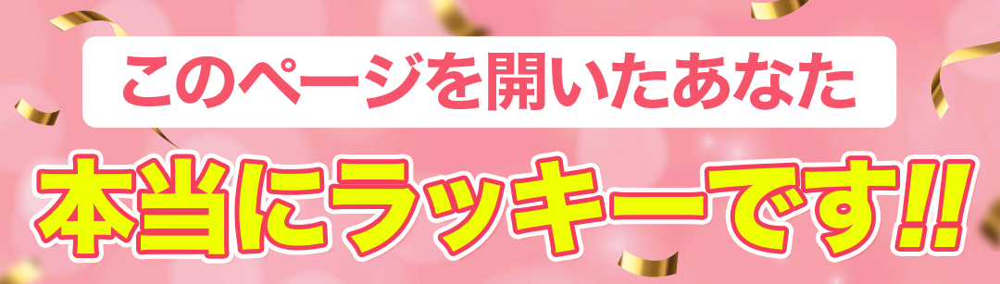
アンケートに答えるだけで、
色落ちしないと話題の永久染毛剤が
通常の半額程度の金額で手に入ります！
※ヘアカラーロング剤の分類名であり、染色効果は2ヵ月程度。新たに生えてくる白髪には染色効果はありません。
質問① 白髪が気になるのはどんな時ですか？
質問② どんな染毛剤が欲しいですか？
質問③ どの色の染毛剤を試したいですか？
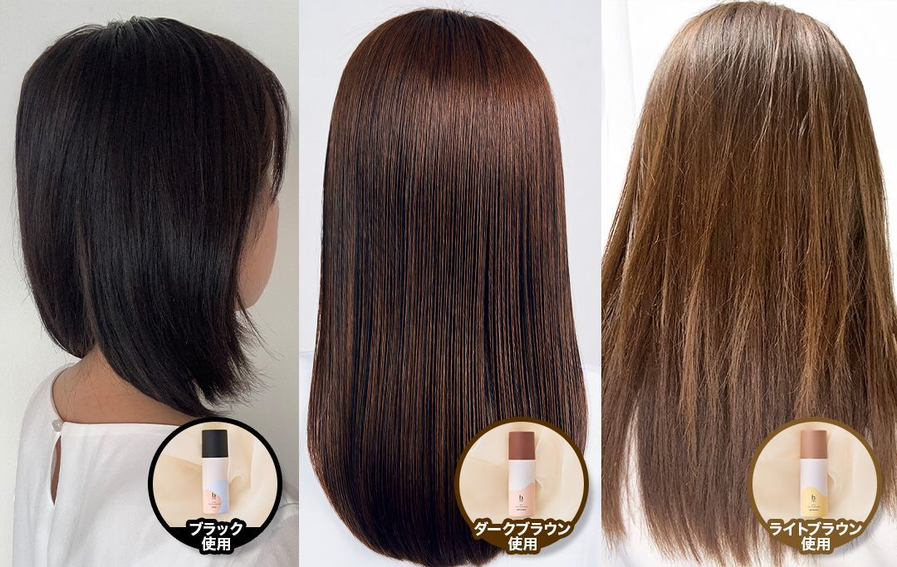
※成分に対して
アンケートにご回答いただいた方へ
今だけ特別キャンペーンのご案内
あなたにぴったりの
b.risのエアリーカラーリングフォームを
どこよりも安くお届けします！
こんなにお得に手に入るのは
今だけ！
二度と無いチャンスなので
早めにゲットしてください！
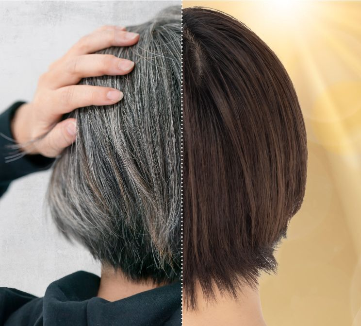
実際に
b.risを使った後の写真がこちら！！
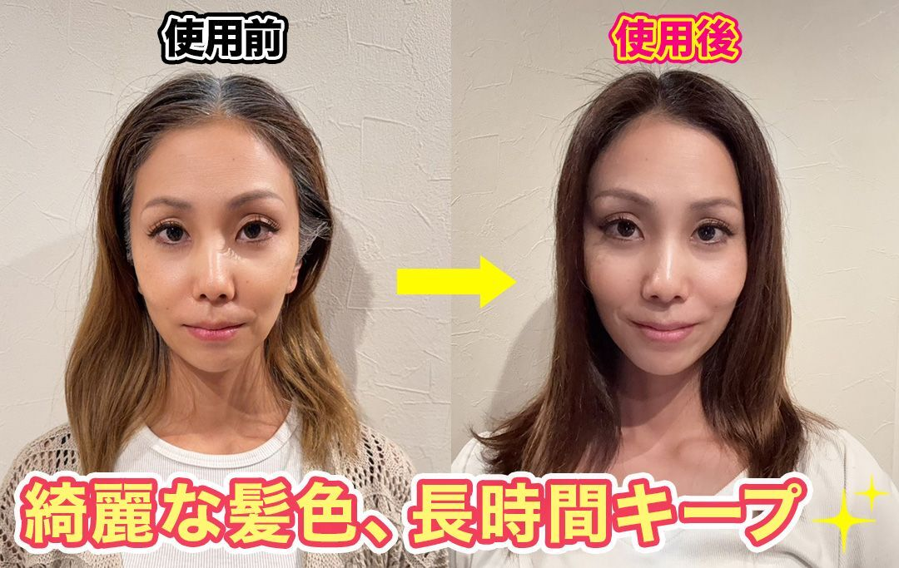
こんなに色落ちしないのは初めて！と、
喜びの声が絶えません！！
＃PR
#PR
実はこの染毛剤
東大卒の医師も注目していて
※成分に対して
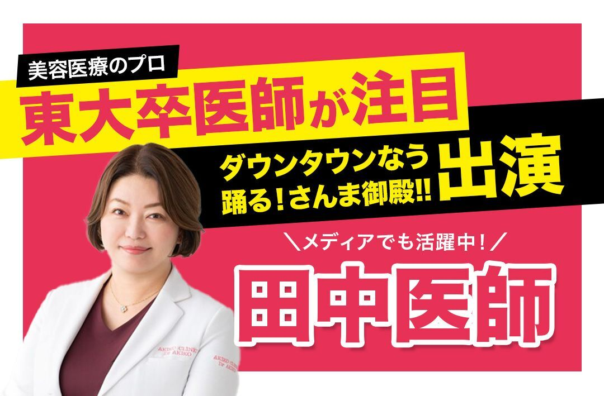
有名美容師も絶賛の
お墨付き商品なんです！
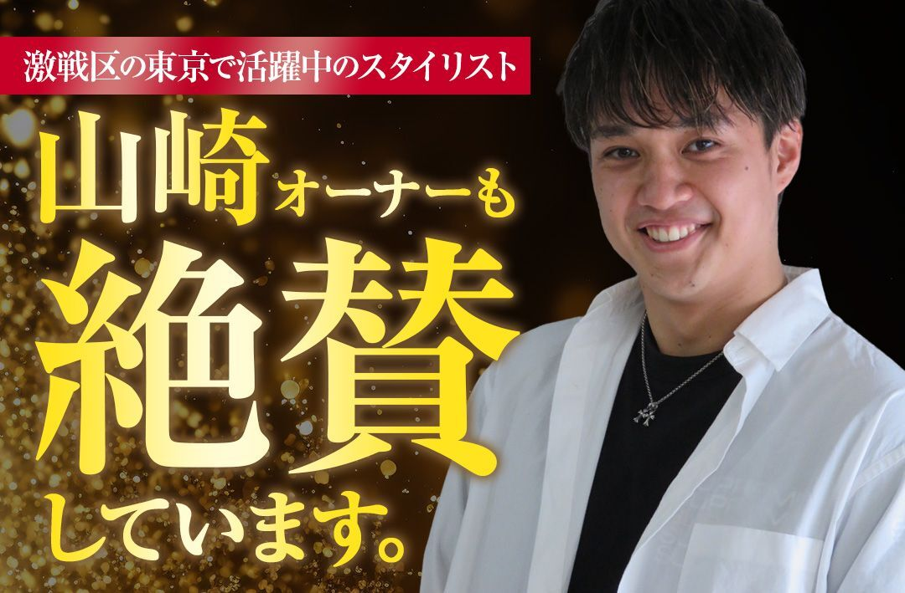
しかも、
国が成分を認めているほど！
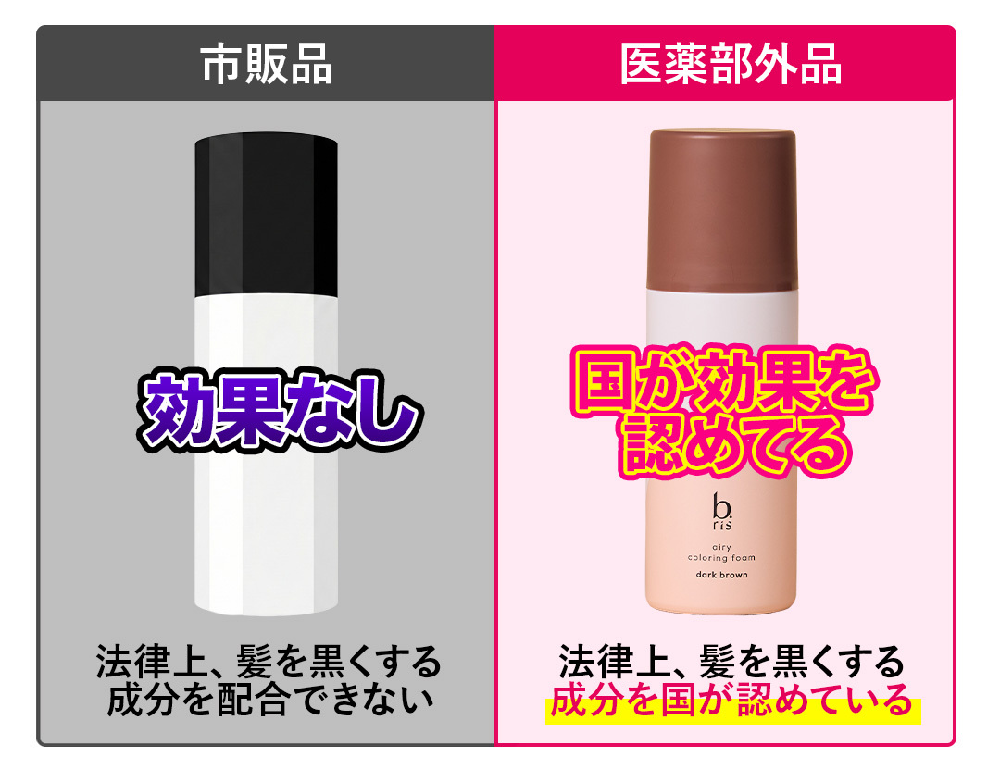
だから、
楽天でも堂々の1位だし
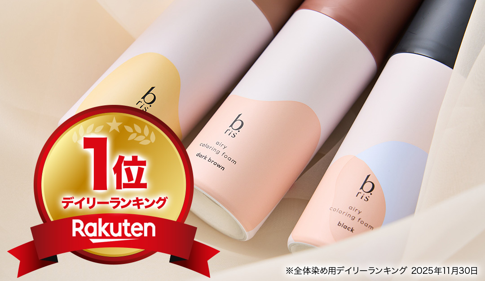
累計販売数は
400万個を突破している
大人気商品なんです！
※2026年1月末 b.risシリーズ累計出荷実績
※2026年1月末 b.risシリーズ累計出荷実績
実際に使った人が
「全く色落ちしない」
と大絶賛の、
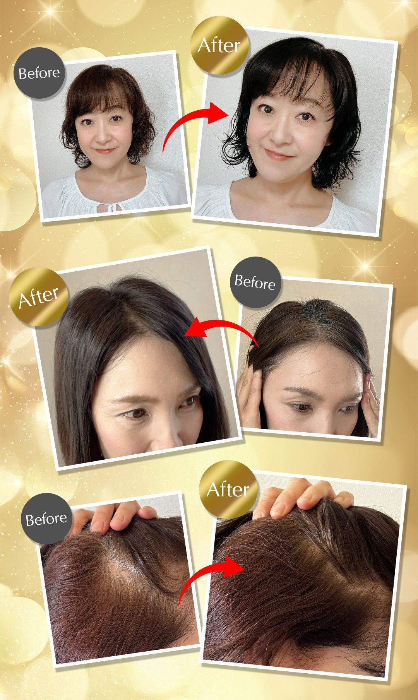
※染料効果による
※画像はイメージ"
※画像はイメージ"
いま話題の永久染毛剤
※ヘアカラーロング剤の分類名であり、染色効果は2ヵ月程度。新たに生えてくる白髪には染色効果はありません。
ぶっちゃけ白髪で悩んでるなら
使わない理由ないですよね？
私みたいに
白髪の悩みから解放されたい人は
絶対見てください！
もしあなたが今、
市販の白髪染めを使っているなら、
今すぐやめたほうがいいです⚠️
なぜかと言うと…
市販の白髪染めは
キューティクルを破壊してしまうから。
だから、
使えば使うほど
髪がボロボロに…
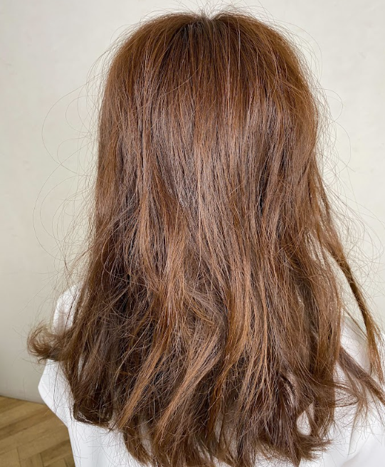
傷んだ髪は色落ちしやすいので、
負の連鎖が止まりません😱
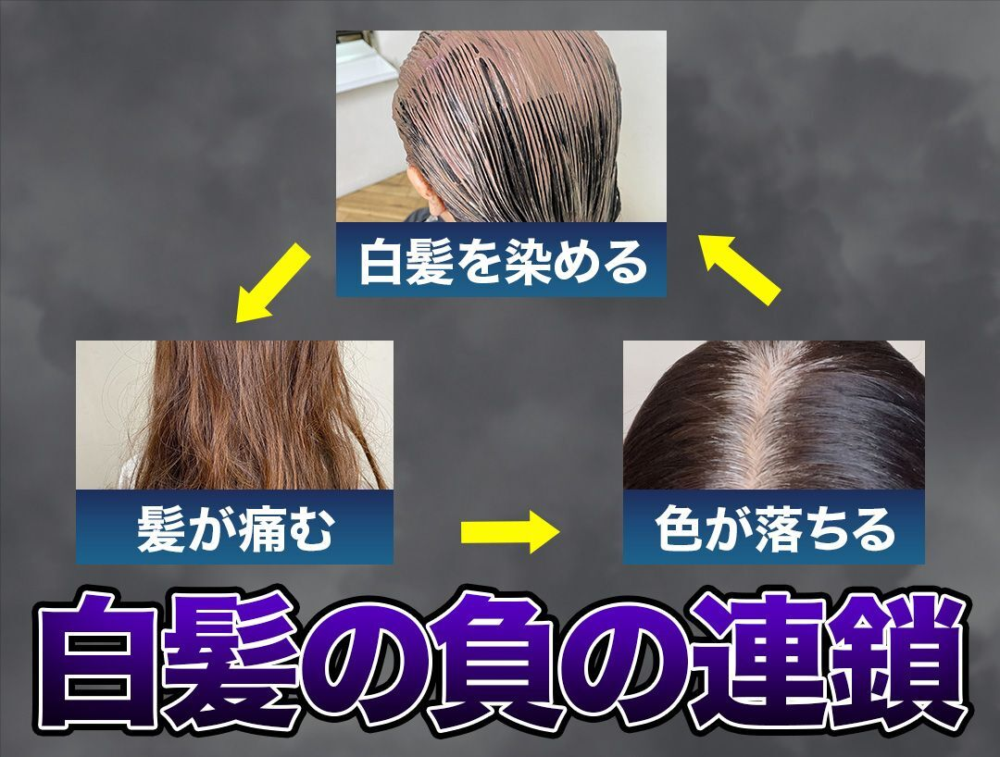
こんな状態だから、
染めてもすぐに
白髪が目立っちゃうんです…
こうならないためにも、
いつまでも若々しい髪でいたいなら
キューティクルを守るのが最重要！
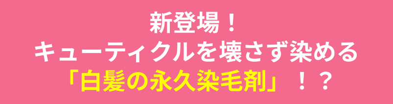
※ヘアカラーロング剤の分類名であり、染色効果は2ヵ月程度。
新たに生えてくる白髪には染色効果はありません。
そこで、
最近開発されたのが…
※成分に対して
東大卒の医師も注目の
\白髪の永久染毛剤/
b.ris（ビーリス）
※ヘアカラーロング剤の分類名であり、染色効果は2ヵ月程度。
新たに生えてくる白髪には染色効果はありません。
新たに生えてくる白髪には染色効果はありません。
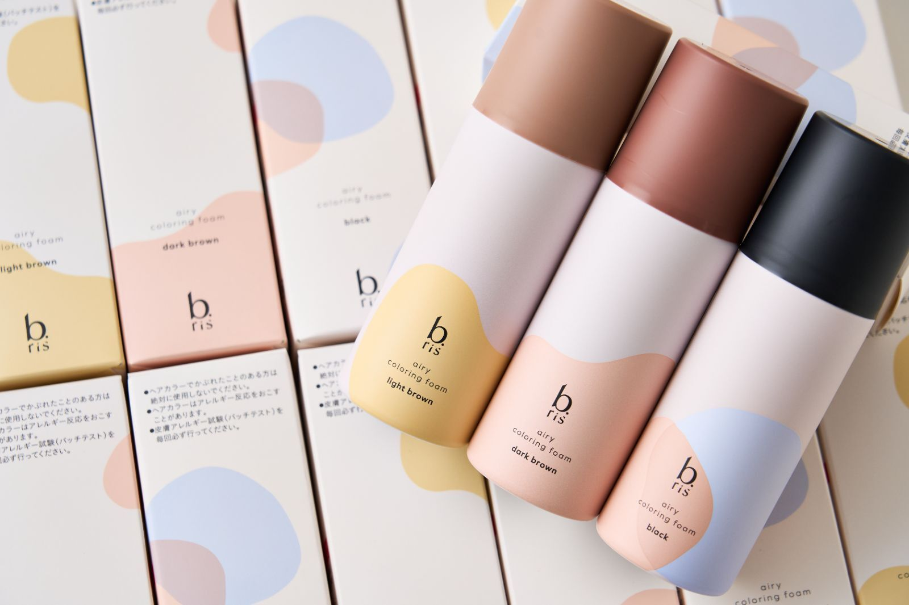
永久に染めることができるので、
いつまでも
綺麗な髪をキープできる
と話題なんです！
有名女性誌CLASSY.
にも取り上げられ、
過去4回も完売するほど
大人気！
※2024年1月9日、2025年3月11日、5月23日、9月5日
その実力の高さから、
効果を国に認められた
“医薬部外品”に指定されています！
国も認めた成分だから
しっかりと髪を染められるんです！
そんなb.risの最大の特徴は、
ナノサイズの独自成分！
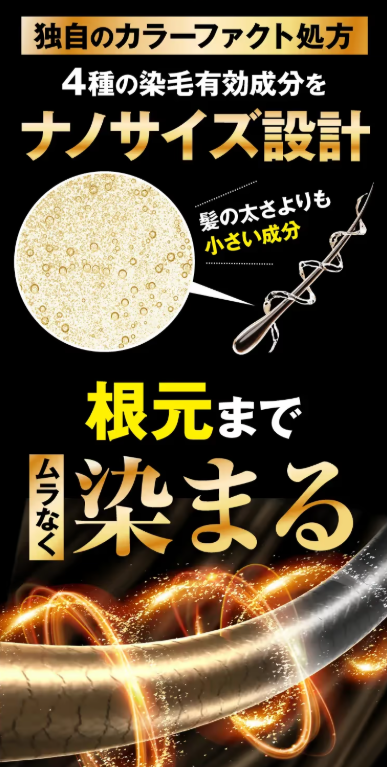
※染料効果による
髪の100万分の1の大きさの成分が、
キューティクルを壊すことなく
髪の内部に浸透するから
市販の白髪染めと違って、
髪を傷めずに
染めることができるんです！
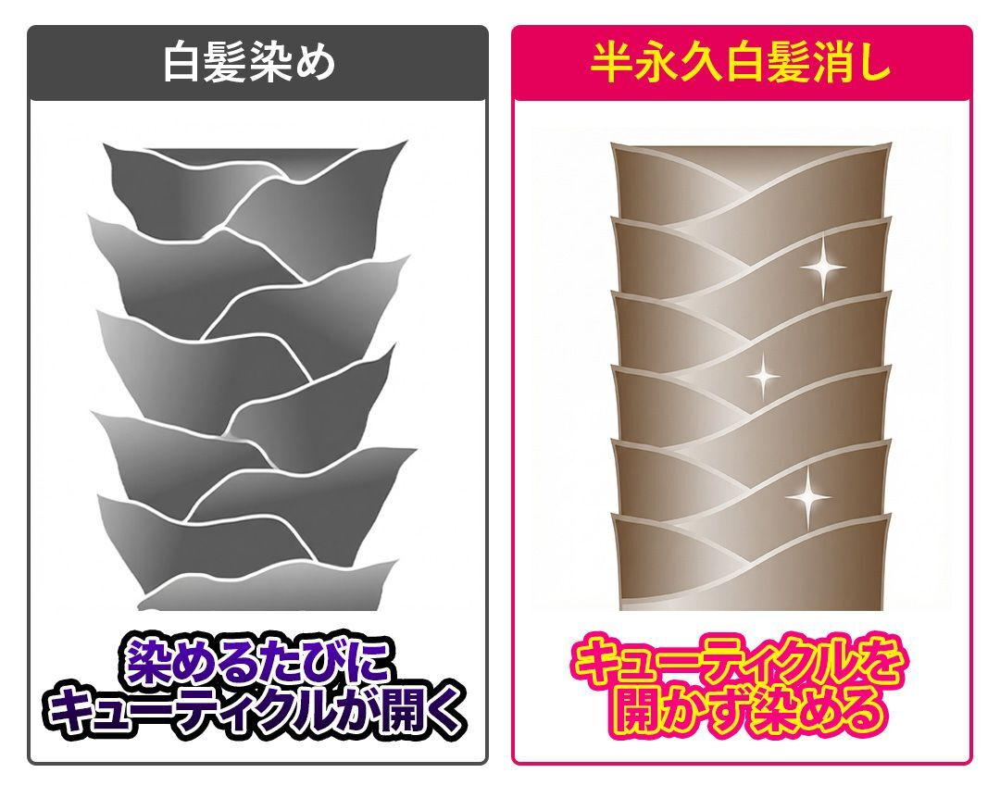
※継続利用による
だから1度染めれば、
もう白髪の心配は不要！
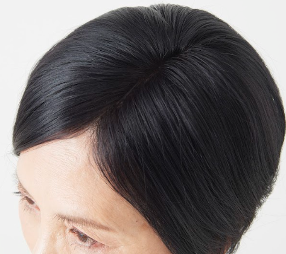
「2ヶ月経っても余裕」
「市販の白髪染めは卒業した」
と感動する人が続出してます✨️
※継続利用による
さらに！
トリートメント成分を
たっぷり配合しているので
キューティクルが補修されて
ツヤツヤの髪に💕
まるで20代の頃ような
若見え髪
が手に入っちゃうんです✨️
仕上がりは超サロンクオリティで
「美容師泣かせ」と
プロも絶賛するほど！
実際に使っている人も、
みんな大満足しています！
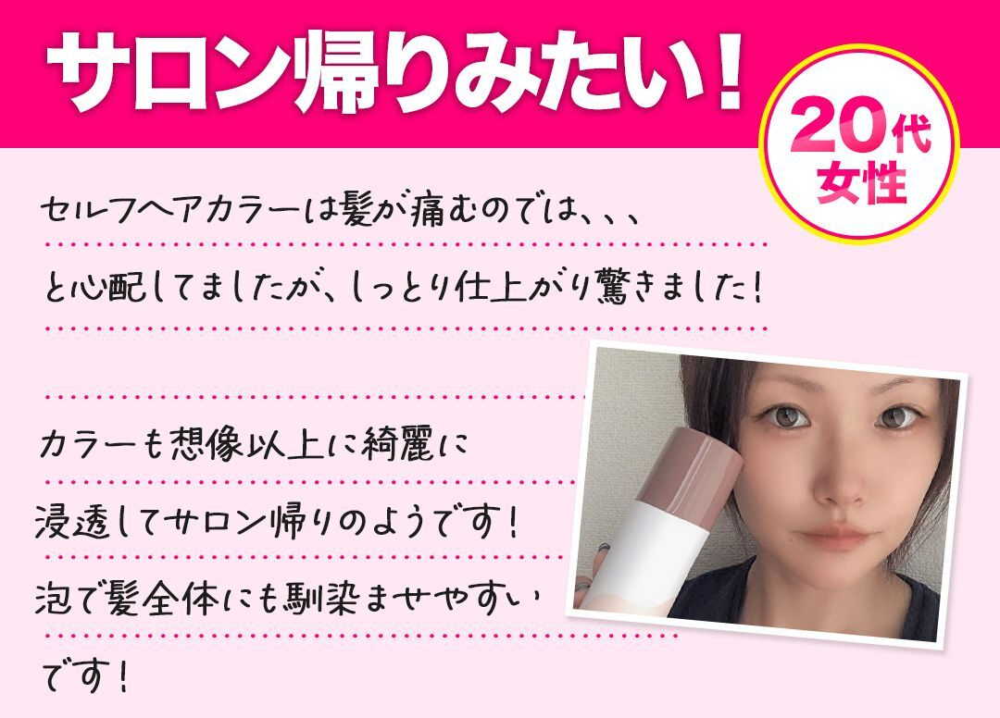
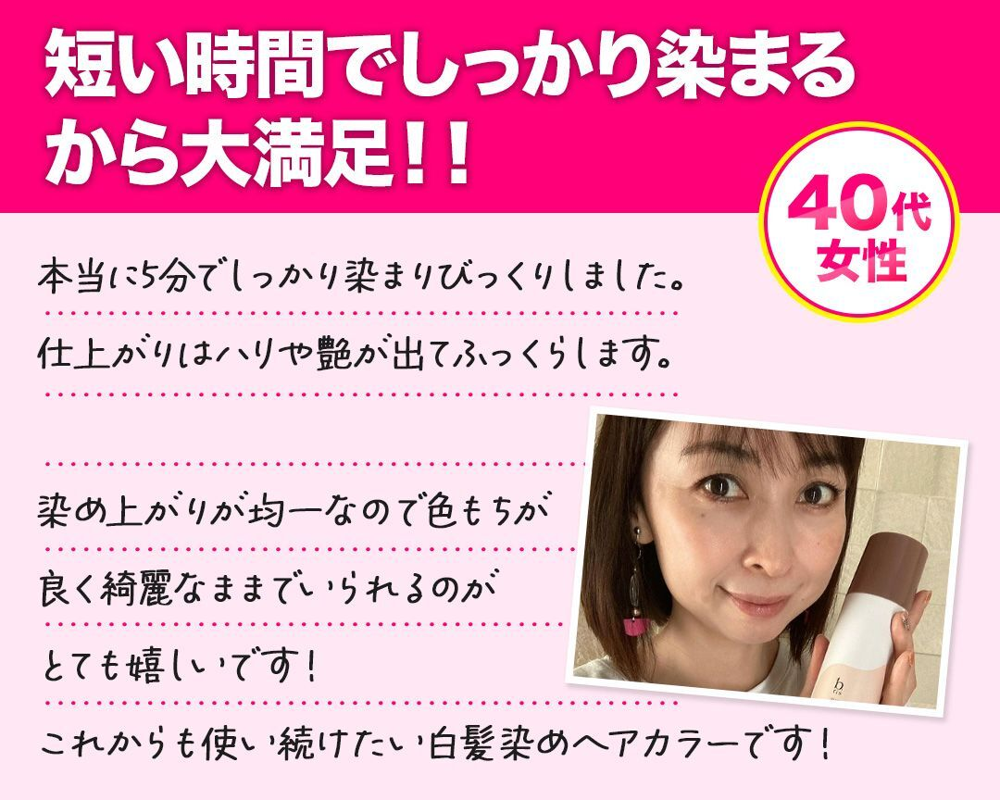
"※個人の感想です。効果効能を保証するものではありません。
※弊社より依頼をして、頂いたコメントを編集しています
※PR
※弊社より依頼をして、頂いたコメントを編集しています
※PR
とはいえ、実際どうなの…？
という方のために、
白髪に悩んでいた私が
レビューしてみました！
カラーは3色ありました✨️
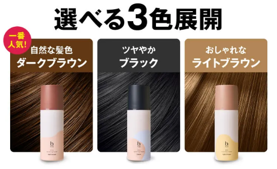
私が注文したのは、
一番人気の
ダークブラウン！
サイズは大きめで、
4回は使えそうでした♪
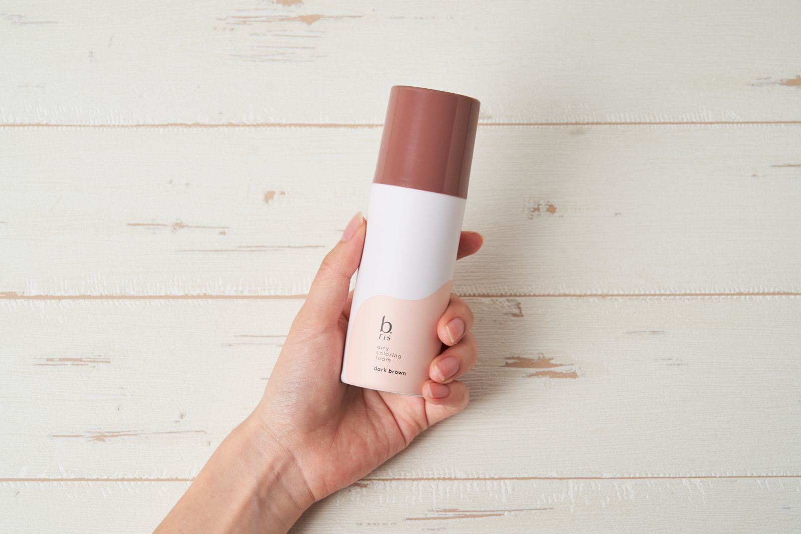
中身はもっちりした濃密泡！
泡が垂れてくることもなく、
不器用な私でも簡単に塗れました！
5分ほど放置したら、
洗い流します✨️
そして
ドライヤーで乾かすと…
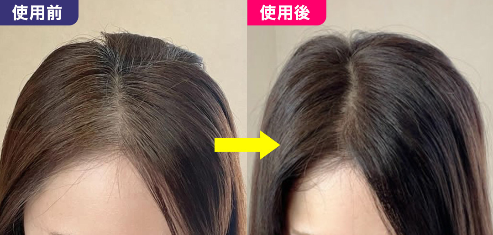
根本から
しっかり染まってる✨️
ボロボロだった私の髪も、
まるでサロン帰りみたい♪
今までの白髪染めと
比べ物にならない仕上がりでした！
そんなb.ris（ビーリス）が、
今なら最安値で手に入るので
ここから先は絶対読んでください！
b.ris（ビーリス）は、
美容師も認める
サロン品質の永久染毛剤
※ヘアカラーロング剤の分類名であり、染色効果は2ヵ月程度。新たに生えてくる白髪には染色効果はありません。
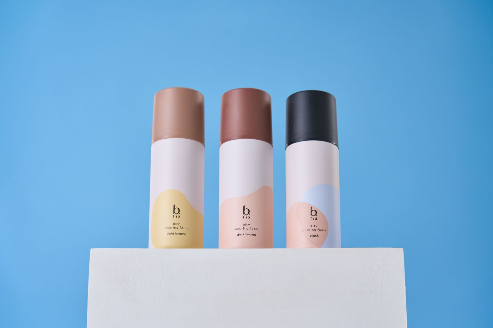
普通に買うと、
通常価格4,689円と、
決して安くはありません…
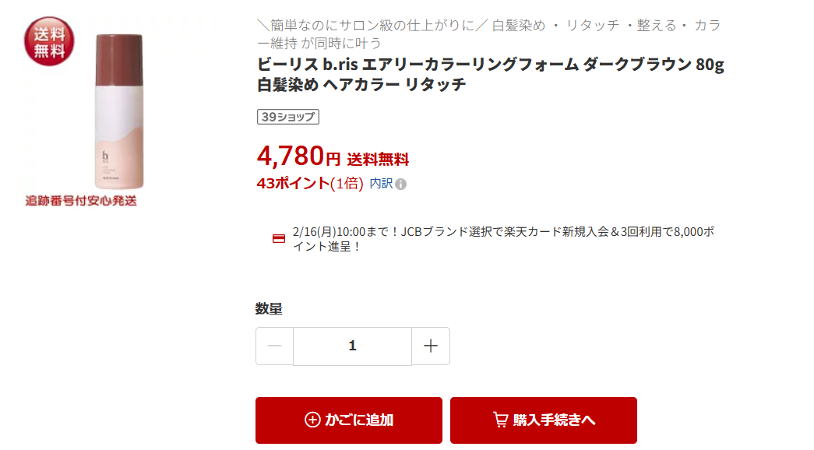
これの価格でも過去4度完売
するほど人気なんですが、
※2024年1月9日、2025年3月11日、5月23日、9月5日
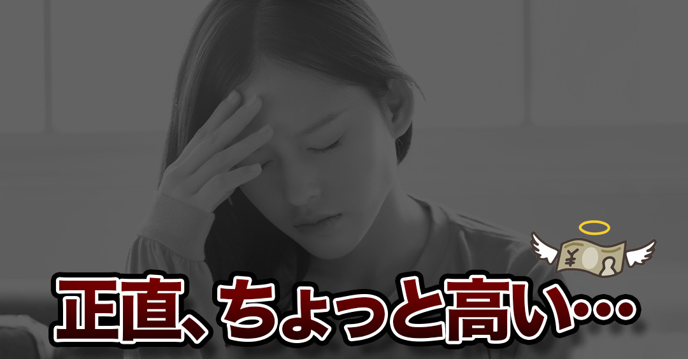
正直高いですよね。
しかし！
これを読んでいるあなたはラッキー！
今ならなんと！
メーカーのアンケートに
答えた方限定で、定期便初回が
\最安値/
約47%オフの2,480円
でゲットできちゃいます！
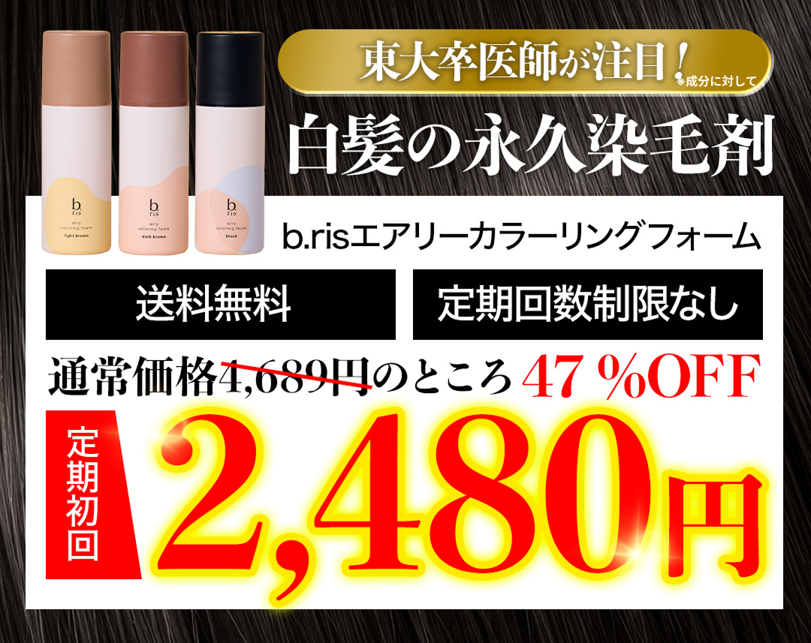
※ヘアカラーロング剤の分類名であり、染色効果は2ヵ月程度。新たに生えてくる白髪には染色効果はありません。
余った分はリタッチにとっておけるので
市販の白髪染めよりお得！
届くのはお試し品ではなく、
もちろん正規品1本です◎
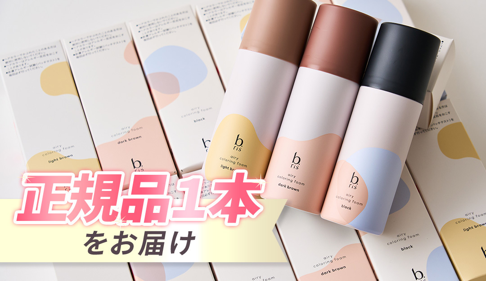
ちなみに
ネットの商品でありがちな
定期購入回数のお約束も一切なし！
いつでも解約できるし、
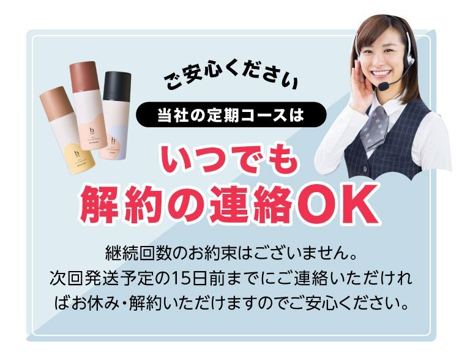
全額返金保証も
あるので安心です♪
※返送時の送料はお客様負担となります
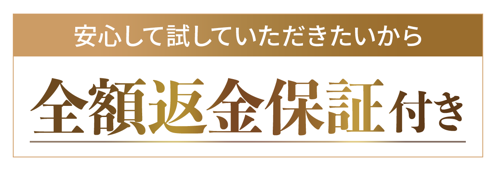
また、
後払いも選べるので、
商品到着後に支払うのでもOK！
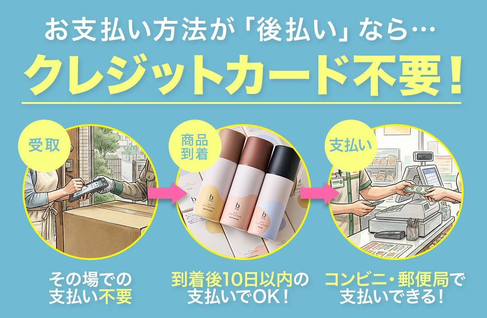
⚠️ただし⚠️
さすがにお得すぎて
注文が殺到中！
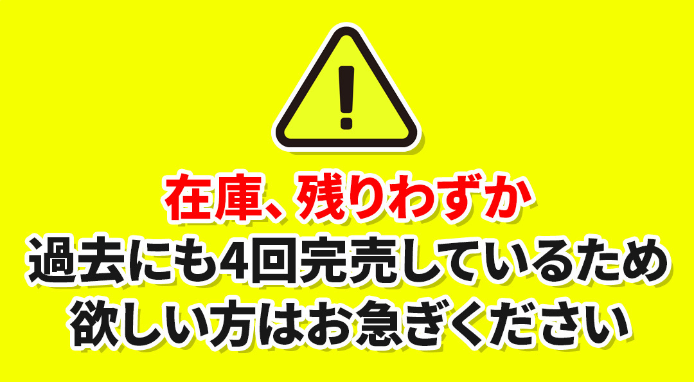
在庫が無くなる前に、
アンケートに答えて
最安値でゲットしちゃってください！
🚨在庫わずかで予約殺到中！急いで💦
本日の受付終了まで
本日の受付終了まで
あと
06
57
30
58
※ヘアカラーロング剤の分類名であり、染色効果は2ヵ月程度。新たに生えてくる白髪には染色効果はありません。
本当にお得に手に入るの大チャンスなので、
在庫がある今のうちに
下のボタンから注文してください！